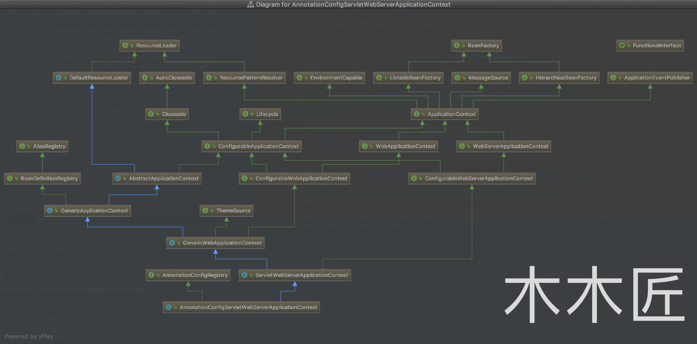

/** * Create a new {@link SpringApplication} instance. The application context will load * beans from the specified primary sources (see {@link SpringApplication class-level} * documentation for details. The instance can be customized before calling * {@link #run(String...)}. * @param resourceLoader the resource loader to use * @param primarySources the primary bean sources * @see #run(Class, String[]) * @see #setSources(Set) */ @SuppressWarnings({ "unchecked", "rawtypes" }) publicSpringApplication(ResourceLoader resourceLoader, Class<?>... primarySources){ this.resourceLoader = resourceLoader; Assert.notNull(primarySources, "PrimarySources must not be null"); this.primarySources = new LinkedHashSet<>(Arrays.asList(primarySources)); // 将启动类(TomcatdebugApplication) 存储到 SpringApplication 对象的 primarySources 属性中 this.webApplicationType = WebApplicationType.deduceFromClasspath(); // 推断 Web 应用类型 setInitializers((Collection) getSpringFactoriesInstances( ApplicationContextInitializer.class)); setListeners((Collection) getSpringFactoriesInstances(ApplicationListener.class)); this.mainApplicationClass = deduceMainApplicationClass(); }
/** * Map with primitive wrapper type as key and corresponding primitive * type as value, for example: Integer.class -> int.class. * 原始类型包装器类型-原始类型 */ privatestaticfinal Map<Class<?>, Class<?>> primitiveWrapperTypeMap = new IdentityHashMap<>(8);
/** * Map with primitive type as key and corresponding wrapper * type as value, for example: int.class -> Integer.class. * 原始类型-原始类型包装器类型 */ privatestaticfinal Map<Class<?>, Class<?>> primitiveTypeToWrapperMap = new IdentityHashMap<>(8);
/** * Map with primitive type name as key and corresponding primitive * type as value, for example: "int" -> "int.class". * 原始类型名称-原始类型包装器类型 */ privatestaticfinal Map<String, Class<?>> primitiveTypeNameMap = new HashMap<>(32);
/** * Map with common Java language class name as key and corresponding Class as value. * Primarily for efficient deserialization of remote invocations. */ privatestaticfinal Map<String, Class<?>> commonClassCache = new HashMap<>(64);
/** * Common Java language interfaces which are supposed to be ignored * when searching for 'primary' user-level interfaces. */ privatestaticfinal Set<Class<?>> javaLanguageInterfaces;
// Map entry iteration is less expensive to initialize than forEach with lambdas for (Map.Entry<Class<?>, Class<?>> entry : primitiveWrapperTypeMap.entrySet()) { // 保存原始类型-原始类型包装器类型 primitiveTypeToWrapperMap.put(entry.getValue(), entry.getKey()); // 保存原始类型-原始类型包装器类型 registerCommonClasses(entry.getKey()); }
/** * Determine whether the {@link Class} identified by the supplied name is present * and can be loaded. Will return {@code false} if either the class or * one of its dependencies is not present or cannot be loaded. * @param className the name of the class to check * @param classLoader the class loader to use * (may be {@code null} which indicates the default class loader) * @return whether the specified class is present */ publicstaticbooleanisPresent(String className, @Nullable ClassLoader classLoader){ try { forName(className, classLoader); returntrue; } catch (Throwable ex) { // Class or one of its dependencies is not present... returnfalse; } }
/** * Replacement for {@code Class.forName()} that also returns Class instances * for primitives (e.g. "int") and array class names (e.g. "String[]"). * Furthermore, it is also capable of resolving inner class names in Java source * style (e.g. "java.lang.Thread.State" instead of "java.lang.Thread$State"). * @param name the name of the Class // 待获取类的类名 * @param classLoader the class loader to use * (may be {@code null}, which indicates the default class loader) * @return a class instance for the supplied name * @throws ClassNotFoundException if the class was not found * @throws LinkageError if the class file could not be loaded * @see Class#forName(String, boolean, ClassLoader) */ publicstatic Class<?> forName(String name, @Nullable ClassLoader classLoader) throws ClassNotFoundException, LinkageError {
/** * Resolve the given class name as primitive class, if appropriate, * according to the JVM's naming rules for primitive classes. * <p>Also supports the JVM's internal class names for primitive arrays. * Does <i>not</i> support the "[]" suffix notation for primitive arrays; * this is only supported by {@link #forName(String, ClassLoader)}. * @param name the name of the potentially primitive class * @return the primitive class, or {@code null} if the name does not denote * a primitive class or primitive array class */ @Nullable publicstatic Class<?> resolvePrimitiveClassName(@Nullable String name) { Class<?> result = null; // Most class names will be quite long, considering that they // SHOULD sit in a package, so a length check is worthwhile. // 大部分类都在包中，所以类名会很长，但是像基本类型如 int 这样的，类名就很短会返回 int.Class if (name != null && name.length() <= 8) { // Could be a primitive - likely. result = primitiveTypeNameMap.get(name); } return result; }
可以看到，有一个很巧妙的地方，因为 java 中大多数的类名加上包名都很长，而简单类型的相对要短很多，因此这个方法先根据 name 的长度对大多数的类进行过滤；接着就是从缓存里取值——primitiveTypeNameMap.get(name)。primitiveTypeNameMap 是 ClassUtils 维护的一个 map，用于存储涉及简单类型的所有的类和名称的关系映射。
/** * Return the default ClassLoader to use: typically the thread context * ClassLoader, if available; the ClassLoader that loaded the ClassUtils * class will be used as fallback. * <p>Call this method if you intend to use the thread context ClassLoader * in a scenario where you clearly prefer a non-null ClassLoader reference: * for example, for class path resource loading (but not necessarily for * {@code Class.forName}, which accepts a {@code null} ClassLoader * reference as well). * @return the default ClassLoader (only {@code null} if even the system * ClassLoader isn't accessible) * @see Thread#getContextClassLoader() * @see ClassLoader#getSystemClassLoader() */ @Nullable publicstatic ClassLoader getDefaultClassLoader(){ ClassLoader cl = null; try { cl = Thread.currentThread().getContextClassLoader(); } catch (Throwable ex) { // Cannot access thread context ClassLoader - falling back... } if (cl == null) { // No thread context class loader -> use class loader of this class. cl = ClassUtils.class.getClassLoader(); if (cl == null) { // getClassLoader() returning null indicates the bootstrap ClassLoader try { cl = ClassLoader.getSystemClassLoader(); } catch (Throwable ex) { // Cannot access system ClassLoader - oh well, maybe the caller can live with null... } } } return cl; }
默认先获取线程上下文类加载器。
如果当前线程的上下文类加载器拿不到，就拿加载 ClassUtils 的类加载器。
如果还拿不到，就返回委托的系统类加载器，通常是用来启动应用程序的类加载器。
2.2 获取所有Spring工厂类实例
SpringApplication：
1 2 3 4 5 6 7 8 9 10 11 12 13 14 15
private <T> Collection<T> getSpringFactoriesInstances(Class<T> type){ // type = ApplicationContextInitializer.class return getSpringFactoriesInstances(type, new Class<?>[] {}); }
private <T> Collection<T> getSpringFactoriesInstances(Class<T> type, Class<?>[] parameterTypes, Object... args){ ClassLoader classLoader = Thread.currentThread().getContextClassLoader(); // Use names and ensure unique to protect against duplicates Set<String> names = new LinkedHashSet<>( SpringFactoriesLoader.loadFactoryNames(type, classLoader)); List<T> instances = createSpringFactoriesInstances(type, parameterTypes, classLoader, args, names); AnnotationAwareOrderComparator.sort(instances); return instances; }
names 中存储了 Spring 工厂类的名称，第一个 ApplicationContextInitializer.class 的内容为：{“org.springframework.boot.context.ConfigurationWarningsApplicationContextInitializer”, “org.springframework.boot.context.ContextIdApplicationContextInitializer”, “org.springframework.boot.context.config.DelegatingApplicationContextInitializer”, “org.springframework.boot.web.context.ServerPortInfoApplicationContextInitializer”, “org.springframework.boot.autoconfigure.SharedMetadataReaderFactoryContextInitializer”, “org.springframework.boot.autoconfigure.logging.ConditionEvaluationReportLoggingListener”}； instances 中存储了 Spring 工厂类的实例，内容为：{ConfigurationWarningsApplicationContextInitializer对象, ContextIdApplicationContextInitializer对象, DelegatingApplicationContextInitializer对象, ServerPortInfoApplicationContextInitializer对象, SharedMetadataReaderFactoryContextInitializer对象, ConditionEvaluationReportLoggingListener对象}，最后在进行排序。
// resource is in a package of a module defined to this loader if (module.loader() == this) { URL url = findResource(module.name(), name); // checks URL if (url != null && (name.endsWith(".class") || url.toString().endsWith("/") || isOpen(module.mref(), pn))) { checked.add(url); } }
} else { // not in a package of a module defined to this loader for (URL url : findMiscResource(name)) { url = checkURL(url); if (url != null) { checked.add(url); } } }
// class path (not checked) Enumeration<URL> e = findResourcesOnClassPath(name);
// concat the checked URLs and the (not checked) class path returnnew Enumeration<>() { final Iterator<URL> iterator = checked.iterator(); URL next; privatebooleanhasNext(){ if (next != null) { returntrue; } elseif (iterator.hasNext()) { next = iterator.next(); returntrue; } else { // need to check each URL while (e.hasMoreElements() && next == null) { next = checkURL(e.nextElement()); } return next != null; } } @Override publicbooleanhasMoreElements(){ return hasNext(); } @Override public URL nextElement(){ if (hasNext()) { URL result = next; next = null; return result; } else { thrownew NoSuchElementException(); } } };
/** * Strategy method used to create the {@link ApplicationContext}. By default this * method will respect any explicitly set application context or application context * class before falling back to a suitable default. * @return the application context (not yet refreshed) * @see #setApplicationContextClass(Class) */ protected ConfigurableApplicationContext createApplicationContext(){ Class<?> contextClass = this.applicationContextClass; if (contextClass == null) { try { switch (this.webApplicationType) { case SERVLET: contextClass = Class.forName(DEFAULT_SERVLET_WEB_CONTEXT_CLASS); break; case REACTIVE: contextClass = Class.forName(DEFAULT_REACTIVE_WEB_CONTEXT_CLASS); break; default: contextClass = Class.forName(DEFAULT_CONTEXT_CLASS); } } catch (ClassNotFoundException ex) { thrownew IllegalStateException( "Unable create a default ApplicationContext, " + "please specify an ApplicationContextClass", ex); } } return (ConfigurableApplicationContext) BeanUtils.instantiateClass(contextClass); }
这里就是根据我们的 webApplicationType 来判断创建哪种类型的 Servlet，代码中分别对应着 Web 类型（SERVLET），响应式 Web 类型（REACTIVE），非 Web 类型（default），我们建立的是 Web 类型，所以肯定实例化 DEFAULT_SERVLET_WEB_CONTEXT_CLASS 指定的类，也就是 AnnotationConfigServletWebServerApplicationContext 类，我们来用图来说明下这个类的关系 
// Destroy already created singletons to avoid dangling resources. destroyBeans();
// Reset 'active' flag. cancelRefresh(ex);
// Propagate exception to caller. throw ex; }
finally { // Reset common introspection caches in Spring's core, since we // might not ever need metadata for singleton beans anymore... resetCommonCaches(); } } }
/** * Access to the engine, for further customization. * @return The engine */ public Engine getEngine(){ Service service = getServer().findServices()[0]; if (service.getContainer() != null) { return service.getContainer(); } Engine engine = new StandardEngine(); engine.setName( "Tomcat" ); engine.setDefaultHost(hostname); engine.setRealm(createDefaultRealm()); service.setContainer(engine); return engine; }
/** * If used, an Engine is always the top level Container in a Catalina * hierarchy. Therefore, the implementation's <code>setParent()</code> method * should throw <code>IllegalArgumentException</code>. * * @author Craig R. McClanahan */ publicinterfaceEngineextendsContainer{ //省略代码 } /** * <p> * The parent Container attached to a Host is generally an Engine, but may * be some other implementation, or may be omitted if it is not necessary. * </p><p> * The child containers attached to a Host are generally implementations * of Context (representing an individual servlet context). * * @author Craig R. McClanahan */ publicinterfaceHostextendsContainer{ //省略代码 } /*** </p><p> * The parent Container attached to a Context is generally a Host, but may * be some other implementation, or may be omitted if it is not necessary. * </p><p> * The child containers attached to a Context are generally implementations * of Wrapper (representing individual servlet definitions). * </p><p> * * @author Craig R. McClanahan */ publicinterfaceContextextendsContainer, ContextBind{ //省略代码 } /**</p><p> * The parent Container attached to a Wrapper will generally be an * implementation of Context, representing the servlet context (and * therefore the web application) within which this servlet executes. * </p><p> * Child Containers are not allowed on Wrapper implementations, so the * <code>addChild()</code> method should throw an * <code>IllegalArgumentException</code>. * * @author Craig R. McClanahan */ publicinterfaceWrapperextendsContainer{
//添加Wrapper容器 publicstatic Wrapper addServlet(Context ctx, String servletName, Servlet servlet){ // will do class for name and set init params Wrapper sw = new ExistingStandardWrapper(servlet); sw.setName(servletName); ctx.addChild(sw);